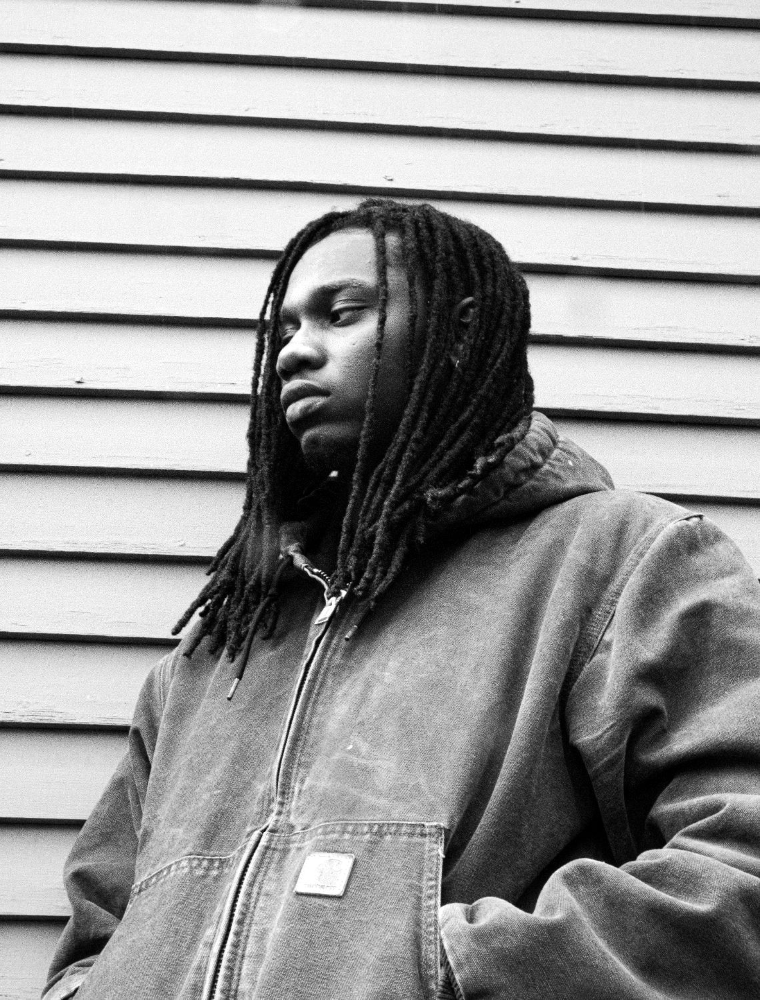

About istwa
01 / 05
Roth$child makes music, writes and takes photographs. Mawon Freedom Arts is home base for all three.
Artist · Producer · Storyteller
Hailing from the 509 (Haiti) and the 305 (Miami), Roth$child's (born Rothschild J. Toussaint) creates worlds with lyrical brevity and dynamics instrumentalism. A rap aficionado and historian, Roth$child sees his talent as omnipresent in the genre. Fixated on being versatile, Roth$child infuses a plethora of genres in his music and allows mind to wander and create worlds within sonic measures.
Mawon Freedom Arts is a multimedia house founded by Roth$child. Music, writing and photography sit side by side here, like drums in the same set.
The music arm of Mawon Freedom Arts. Listen →
Haiti (the 509) and Miami (the 305).
Music · Writing · Photography

In Haitian Kreyòl, mawon means maroon. The maroons were people who freed themselves from slavery and built their own communities in the mountains.
In Port-au-Prince there is a statue called Nèg Mawon, the Unknown Maroon. He blows a conch shell, a broken chain at his ankle, calling people to freedom. Mawon Freedom Arts takes its name from that call: make the work on your own terms, and make enough noise that others can find it.